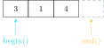

, and iterator categories (input, forward, bidirectional, random access) say which operations are allowed.
, and iterator categories (input, forward, bidirectional, random access) say which operations are allowed.Definition
Iterators form a hierarchy of concepts, each adding operations:
- input/output: read or write once,
++; - forward: several passes;
- bidirectional: also
--(list,set,map); - random access:
it + n,it[n],<in (
(vector,deque, raw pointers).
They reproduce part of pointer behaviour through overloaded operators, but they are not pointers. Each container provides iterator, const_iterator (cbegin), reverse_iterator (rbegin, crend).
Example
std::list<int> l = {3, 1, 4};
for (std::list<int>::iterator it = l.begin(); it != l.end(); ++it) *it *= 2;
// range-for: the same loop, written by the compiler
for (int x : l) std::cout << x;Picture

end() points one past the last element: the range is half open, and an empty range has begin() = end()=.
Intuition
Iterators are the glue of the STL: algorithms speak iterators, containers produce them, so  algorithms and
algorithms and  containers need pieces of code, not .
containers need pieces of code, not .
Pitfall
Changing a container can invalidate its iterators: push_back on a vector may reallocate and leave every iterator dangling; erasing inside a loop must use the iterator returned by erase.